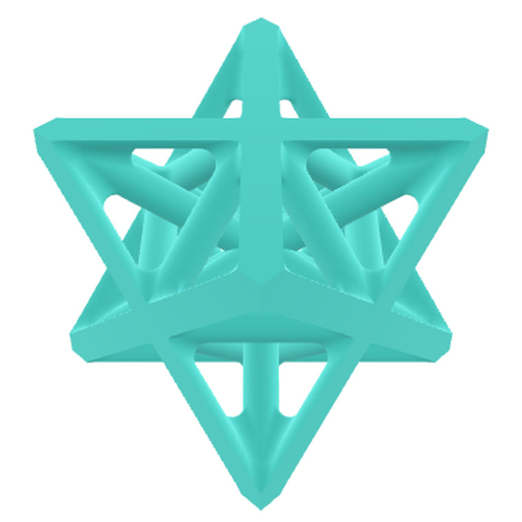
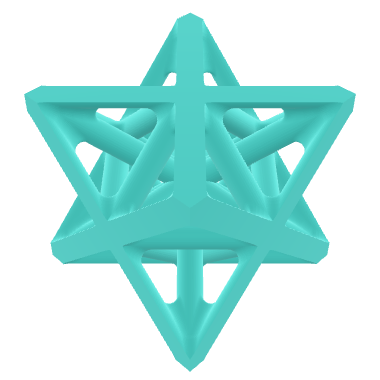
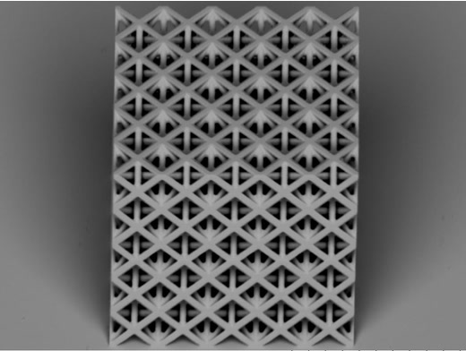

Mechanical Metamaterial Unit Cell
Spring 2026 · MIT 2.002 Mechanics and Materials II

Summary: With teammates Zachary DiBiase and Carlos Longoria, I designed a star-shaped mechanical metamaterial unit cell for the final 2.002 project. The design was 3D-printed in a polymer at the micrometer scale by two-photon lithography at MIT.nano, then compressed inside a scanning electron microscope while we recorded load, displacement and video. We compared the measured stiffness against finite element predictions from SolidWorks.
Skills
- CAD design of architected (lattice) materials in SolidWorks
- Finite element analysis: linear compression of a unit cell and its tessellation
- Scanning electron microscopy and image-based measurement in Fiji/ImageJ
- In situ nanoindentation and stress–strain analysis (modulus, yield, toughness)
Context
Mechanical metamaterials, also called architected materials, get their properties from their geometry as much as from the material they are made of. In the last part of the 2.002 project, each team designs a unit cell, has it printed at micrometer scale, and measures how it behaves, using the tools of nanomechanics: measuring mechanical properties of structures that are far too small for a standard testing machine.
Design
Our unit cell is a star-shaped lattice of intersecting struts that tie together at shared nodes. It is mostly open space, so the question is how much stiffness the strut layout can carry. The cell was tessellated into a block of repeating cells for printing.

The unit cell in SolidWorks.
Predicting stiffness with FEA
Before printing, we ran linear compression simulations in SolidWorks to estimate the effective Young’s modulus, E*. Each model was compressed to 3% strain (kept in the linear regime), with the bottom face fixed to match the experiment. The effective modulus is the average stress on the loaded face divided by the applied strain.
- Single unit cell: E* ≈ 523 MPa
- 2×2×2 tessellation: E* ≈ 510 MPa
The tessellation is the better prediction of the printed block, since it includes the load sharing between neighboring cells.
Fabrication and measurement
The samples were printed by two-photon lithography, which uses ultrafast laser pulses to polymerize a photosensitive resin along a voxel only about 200 nm across: effectively the highest-resolution 3D printing available. Before testing, we measured the printed sample in an SEM image using Fiji, calibrating against the scale bar, and corrected the apparent vertical dimensions for the viewing angle. The block measures about 145 µm wide and 143 µm tall, with struts about 5.4 µm thick.

SEM image of the printed sample before compression (scale bar 100 µm).
Testing in situ
The compression test ran inside the SEM using a nanoindenter, an instrument with nanometer and micronewton precision. A flat punch presses down on the sample while the load–displacement data and a video are recorded together, so every feature of the load curve can be matched to what the structure is doing. Dividing load by the sample footprint, and displacement by its height, gives engineering stress and strain, from which come the effective modulus (steepest linear slope), yield strength (0.2% offset) and toughness (area under the curve).
The sample being compressed by the nanoindenter inside the SEM.